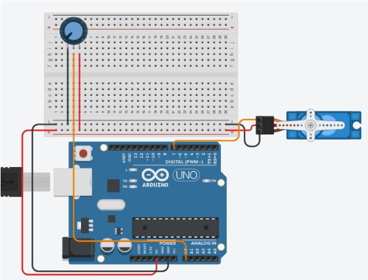
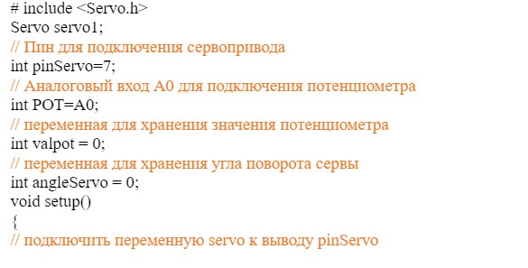
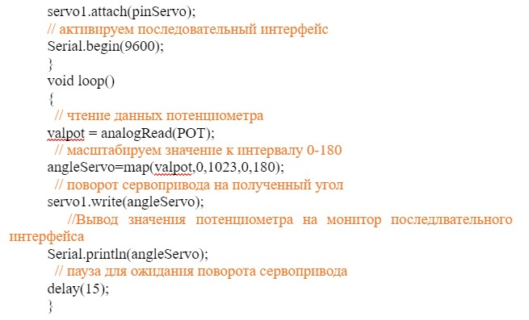

Сервопривод FS90 позволяет установить и удерживать угол поворота колеса, шестерни или заслонки. Привод развивает крутящий момент 1,3 кг·см и обладает углом поворота 180°, то есть, может быть установлен в любое положение в пределах полуокружности.
Формат «микро» полезен там, где важен минимальный размер и вес привода.
Особенности
Вместе с сервоприводом FS90 идёт комплект крепежа и пластиковых качелек. Используйте их, чтобы приводить в действие различные механизмы без необходимости искать насадки.
Подключение
Для работы сервопривода необходим внешний источник питания c напряжением 5 вольт и управляющая плата.
Привод подключается шлейфом из трёх проводов:
Красный — питание привода.
Коричневый — земля.
Жёлтый — управляющий сигнал от микроконтроллера.
Список деталей для эксперимента:
Схема на макете
Скетч:
 